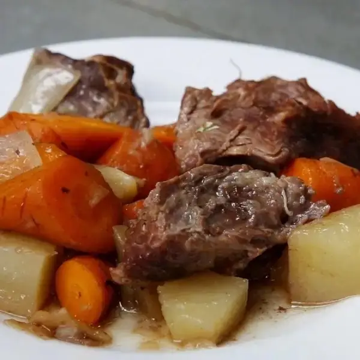

Slow Cooker Pot Roast

- 3 lb chuck roast(1.5 kg)
- salt, to taste
- pepper, to taste
- 1 oz dried onion soup mix(30 g)
- 1 onion, diced
- 3 gold potatoes, diced
- 3 large carrots, chopped
- ½ cup water(120 mL)
- Place the chuck roast in a 7-quart (6 ½ liters) slow cooker and season with salt and pepper.
- Sprinkle the onion soup pack and top with vegetables and water.
- Cook on low for 8 hours, or high for 4-5 hours.